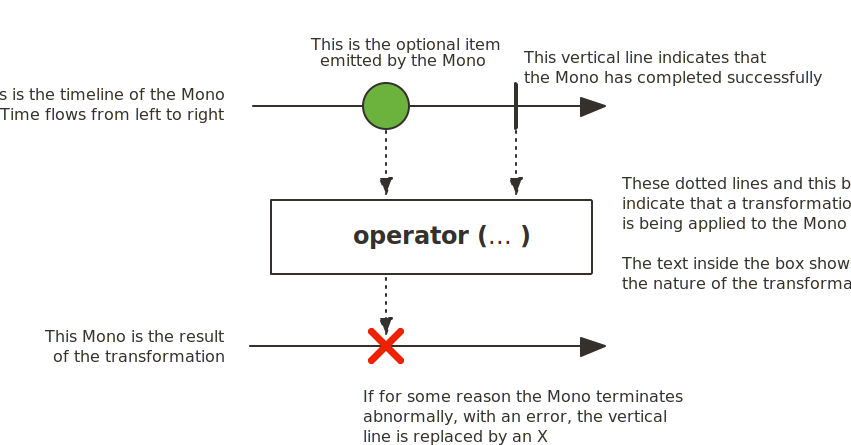

Основные понятия об асинхронном коде
Компьютерные программы часто имеют дело с длительными процессами. Например, получают данные из базы данных или производят сложные вычисления. Пока выполняется одна операция, можно завершить еще несколько. Асинхронное программирование увеличивает эффективность, потому что не позволяет блокировать основной поток выполнения.
В синхронном коде каждая операция ожидает окончания предыдущей. Поэтому вся программа может зависнуть, если одна из команд выполняется очень долго. Асинхронный код убирает блокирующую операцию из основного потока программы, так что она продолжает выполняться, но где-то в другом месте, а обработчик может идти дальше. Проще говоря, главный процесс ставит задачу и передает ее другому независимому процессу.
Возьмем для примера приложение, которое подбирает фильм по указанным критериям. После того как пользователь выбрал параметры, программа отправляет запрос на сервер, где происходит подбор подходящих картин. Обработка может длиться довольно долго. Если приложение работает синхронно, то пользователь не сможет взаимодействовать со страницей, пока не придет результат.
Таким образом, асинхронность в программировании — выполнение процесса в неблокирующем режиме системного вызова, что позволяет потоку программы продолжить обработку.
Недостатки синхронного программирования
Рассмотрим основные недостатки синхронного программирования поподробнее.
Модель поток на запрос
Чтобы понять, что такое реактивное программирование и какие преимущества оно дает, сначала рассмотрим традиционный способ разработки веб-приложения с помощью Spring - использование Spring MVC и его развертывание в контейнере сервлетов, таком как Tomcat: контейнер сервлетов имеет выделенный пул потоков для обработки HTTP-запросов, где каждому входящему запросу будет назначен поток, и этот поток будет обрабатывать весь жизненный цикл запроса. Это означает, что приложение сможет обрабатывать количество одновременных запросов, равное размеру пула потоков. Можно настроить размер пула потоков, но поскольку каждый поток резервирует некоторую память (обычно один мегабайт), чем больший размер пула потоков настраиваем, тем выше потребление памяти.
Если приложение разработано в соответствии с архитектурой на основе микросервисов, у нас есть лучшие возможности для масштабирования в зависимости от нагрузки, но за высокое использование памяти по-прежнему приходится платить. Таким образом, модель потока на запрос может стать довольно дорогостоящей для приложений с большим количеством одновременных запросов.
Важной характеристикой архитектур на основе микросервисов является то, что приложение распределено, выполняется большое количество отдельных процессов, обычно на нескольких серверах. Использование традиционного императивного программирования с синхронными вызовами запроса/ответа для взаимодействия между службами означает, что потоки часто блокируются в ожидании ответа от другой службы, что приводит к огромной трате ресурсов.
Ожидание операций ввода/вывода
При ожидании завершения операций ввода-вывода возникают потери. В таких ситуациях поток, выполняющий запрос ввода-вывода, будет заблокирован и будет ожидать, пока операция не будет завершена, это называется блокирующим вводом-выводом. Такие ситуации, когда выполняющийся поток блокируется, просто ожидая ответа, означает потерю потоков и, следовательно, потерю памяти.
Время ответа
Другой проблемой традиционного императивного программирования является время отклика, когда службе необходимо выполнить более одного запроса ввода-вывода. Например, службе A может потребоваться вызвать службы B и C, а также выполнить поиск в базе данных, а затем вернуть в результате некоторые агрегированные данные. Это будет означать, что время ответа службы A, помимо времени ее обработки, будет суммой следующих значений:
-
Время отклика услуги B (задержка сети + обработка).
-
Время отклика службы C (задержка сети + обработка).
-
Время ответа на запрос к базе данных (сетевая задержка + обработка).
Если нет никакой реальной логической причины выполнять эти вызовы последовательно, то, безусловно, если эти вызовы будут выполняться параллельно, это очень положительно повлияет на время отклика службы А.
Перегрузка клиента
Другой тип проблемы, которая может возникнуть в ландшафте микросервисов, - это когда сервис A запрашивает некоторую информацию у сервиса B, скажем, например, обо всех заказах, размещенных в течение последнего месяца. Если количество заказов окажется огромным, для службы А может возникнуть проблема получить всю эту информацию сразу. Служба A может быть перегружена большим объемом данных, что может привести к ошибке нехватки памяти.
Резюме
Различные проблемы, описанные выше - это проблемы, которые призвано решить реактивное программирование. Преимущества реактивного программирования заключаются в том, что разработчик может:
-
Отойти от модели поток на запрос и может обрабатывать больше запросов с небольшим количеством потоков.
-
Предотвратить блокировку потоков при ожидании завершения операций ввода-вывода.
-
Оптимизировать параллельные вызовы.
-
Поддерживать обратное давление, давая клиенту возможность сообщить серверу, с какой нагрузкой он может справиться.
Что такое реактивное программирование
В документации Spring дано следующее краткое определение реактивного программирования:
Реактивное программирование - это неблокирующие приложения, которые являются асинхронными и управляемыми событиями, и требуют небольшого количества потоков для масштабирования. Ключевым аспектом этого определения является концепция противодавления (backpressure), которая является механизмом, гарантирующим, что производители не перегружают потребителей.
Так как же всего этого достичь? Использовать асинхронные потоки данных!
Допустим, служба A хочет получить некоторые данные из службы B. При подходе в стиле реактивного программирования служба A отправит запрос службе B, которая немедленно вернет управление (неблокирующий и асинхронный запрос). Затем запрошенные данные будут доступны службе A в виде потока данных, где служба B будет публиковать событие onNext() для каждого элемента данных один за другим. Когда все данные будут опубликованы, об этом просигнализирует событие onComplete(). В случае ошибки будет опубликовано событие onError() и больше никаких элементов не будет.
Реактивное программирование - важный метод реализации при разработке реактивных систем, концепция которого описана в Reactive Manifesto - манифесте реактивного программирования, подчеркивая требования к проектированию современных приложений, которые должны быть:
-
Responsive - отзывчивы (дают своевременный ответ).
-
Resilient - устойчивы (остаются отзывчивыми даже в аварийных ситуациях).
-
Elastic - эластичны (быстрая реакция при различной рабочей нагрузке).
-
Message Driven - управляются сообщениями (на основе асинхронной передачи сообщений).
Но чтобы спроектировать систему реактивную в целом, также требуется архитектура, которая обеспечивает все эти аспекты.
Архитектура обеспечения аспектов Reactive Manifesto
В основе подхода лежит идея разделения компонентов на два типа: источник событий Publisher и обработчик событий Subscriber.
Subscriber подписывается на события, которые создаёт Publisher, а затем каким-то образом их обрабатывает. У одного Publisher может быть много подписчиков.
Существует еще одно понятие — Observer. Он может подписаться на событие объекта и выполнять какие-либо действия с полученным результатом.
Общение между Publisher и Subscriber происходит через объект Subscription.
Спецификация реактивных потоков для Java
Для Java был разработан стандарт спецификации Reactive Streams.
Reactive Streams - это небольшая спецификация, предназначенная для реализации реактивными библиотеками, созданными для JVM. Он определяет типы, которые необходимо реализовать для достижения взаимодействия между различными реализациями. Спецификация определяет взаимодействие между асинхронными компонентами с противодавлением. Реактивные потоки были реализованы в Java 9 в виде Flow API.
Спецификация Reactive Streams включает следующие интерфейсы:
Publisher - он представляет производителя данных, является их источником и имеет один метод, который позволяет подписчику зарегистрироваться (подписаться) на издателя.
public interface Publisher<T> {
public void subscribe(Subscriber<? super T> s);
}Subscriber - он представляет потребителя и имеет следующие методы:
public interface Subscriber<T> {
public void onSubscribe(Subscription s);
public void onNext(T t);
public void onError(Throwable t);
public void onComplete();
}-
onSubscribe()- должен вызываться Publisher перед началом обработки и использоваться для передачи на Subscription объекта от Publisher до Subscriber. -
onNext()- используется для того, чтобы сигнализировать о том, что был отправлен новый элемент. -
onError()- используется для того, чтобы сигнализировать о том, что произошел сбой Publisher и больше никаких элементов не будет. -
onComplete()- используется для того, чтобы сигнализировать, что все элементы были успешно отправлены.
Subscription в свою очередь, содержит методы, которые позволяют клиенту управлять выдачей элементов Publisher (т.е. обеспечивать поддержку противодавления).
public interface Subscription {
public void request(long n);
public void cancel();
}-
request()- позволяет Subscriber сообщить, Publisher сколько дополнительных элементов будет опубликовано. -
cancel()- позволяет подписчику отменить дальнейшую отправку элементов Publisher.
Если объект должен преобразовывать входящие элементы, а затем передавать их другому Subscriber, требуется реализация интерфейса Processor. Он действует и как Subscriber и как Publisher.
public interface Processor<T, R> extends Subscriber<T>, Publisher<R> {
}Интерфейсы Publisher, Subscriber и Subscription находятся в пакете org.reactivestreams, который по умолчанию был добавлен в Java 9.
Project REACTOR
Project Reactor - это библиотека Reactive для создания неблокирующих приложений на JVM, основанная на спецификации Reactive Streams.
Возможности Reactor Core
Reactor Core определяет реактивные типы Flux и Mono.
-
Flux - это Publisher, который может испускать от 0 до N элементов.

-
Mono в свою очередь может испускать от 0 до 1 элемента.

Оба они завершаются либо сигналом завершения, либо ошибкой, и они вызывают методы onNext(), onComplete() и onError() нижестоящего подписчика. Помимо реализации функций, описанных в спецификации Reactive Streams, Flux и Mono предоставляют набор операторов для поддержки преобразований, фильтрации и обработки ошибок.
Приведём пример создания объекта типа Flux. Создадим пустой Flux:
void getEmptyMono() {
Mono.empty();
}Создадим Flux содержащий значения:
void simpleFluxExample() {
Flux<String> fluxColors = Flux.just("red", "green", "blue");
fluxColors.subscribe(System.out::println);
}Создадим Flux который выведет в консоль значения от 1 до 5:
public void range() {
Flux.range(1, 5)
.subscribe(System.out::println);
}Создадим Flux, который испускает эти же самые элементы из списка:
public static void fooBarFluxFromList() {
Flux<String> fluxFromList = Flux.fromIterable(Arrays.asList("red", "green"));
fluxFromList.subscribe(System.out::println);
}Cоздадим Flux, который испускает числа от 1 до 10 каждые 100 мс:
public static void counter() throws InterruptedException {
Flux<Long> flux = Flux.interval(Duration.ofMillis(100)).take(10);
flux.subscribe(System.out::println);
Thread.sleep(2000);
}Эти методы создают поток, который испускает предоставленные элементы, а затем завершается. Ничего не передается, пока кто-нибудь на это не подпишется. Чтобы подписаться на него, мы вызываем метод subscribe() и в этом случае просто распечатываем отправленные элементы.
Создание Mono также может быть выполнено с помощью метода just, с той лишь разницей, что разрешен только один параметр.
Методы класса Flux возвращают Flux или Mono, что означает, что операторы могут быть связаны.
Мы можем создать Flux из Mono и наоборот:
Flux<Integer> fluxFromMono = mono.flux();
Mono<Boolean> monoFromFlux = flux.any(s -> s.equals(1));
Mono<Integer> integerMono = flux.elementAt(1);Варианты метода Subscribe()
У программиста есть широкий выбор вариантов метода subscribe(), которые принимают лямбда-выражения для различных комбинаций обратных вызовов, как показано в следующих сигнатурах методах:
1) subscribe();
2) subscribe(Consumer<? super T> consumer);
3) subscribe(Consumer<? super T> consumer,
Consumer<? super Throwable> errorConsumer);
4) subscribe(Consumer<? super T> consumer,
Consumer<? super Throwable> errorConsumer,
Runnable completeConsumer);
5) subscribe(Consumer<? super T> consumer,
Consumer<? super Throwable> errorConsumer,
Runnable completeConsumer,
Consumer<? super Subscription> subscriptionConsumer);-
1) Подписаться и активировать последовательность.
-
2) Сделайте что-нибудь с каждым полученным значением.
-
3) Работать со значениями, но также реагировать на исключительные ситуации.
-
4) Работать со значениями и ошибками, а также запускайте некоторый код после успешного завершения последовательности.
-
5) Работать со значениями, ошибками и успешным завершением, а также делайте что-то с подпиской, созданной этим вызовом подписки.
Перечень операторов в Reactor
Поиск подходящего оператора Reactor предоставляет длинный список операторов и в качестве помощи в поиске подходящего оператора для конкретного варианта использования есть специальное приложение в справочной документации Reactor. Он разделен на различные категории, как показано в таблице ниже.
| Категория оператора | Примеры |
|---|---|
Создание новой последовательности |
just, fromArray, fromIterable, fromStream |
Преобразование существующей последовательности |
map, flatMap, startWith, concatWith |
Заглядывать в последовательность |
doOnNext, doOnComplete, doOnError, doOnCancel |
Фильтрация последовательности |
filter, ignoreElements, distinct, elementAt, takeLast |
Обработка ошибок |
onErrorReturn, onErrorResume, retry |
Работаем со временем |
elapsed, interval, timestamp, timeout |
Расщепление потока |
buffer, groupBy, window |
Возвращаясь к синхронному миру |
block, blockFirst, blockLast, toIterable, toStream |
Многоадресная рассылка потока нескольким подписчикам |
publish, cache, replay |
Например, преобразуем элементы, создаваемые путем применения синхронной функции к каждому элементу:
void mapExample() {
Flux<String> fluxColors = Flux.just("red", "green", "blue");
fluxColors.map(color -> color.charAt(0)).subscribe(System.out::print);
}rgbИли функция zip(), который объединяет несколько источников вместе (ожидая, пока все источники испускают один элемент, и объединяет их в кортеж):
void zipExample() {
Flux<String> fluxFruits = Flux.just("apple", "pear", "plum");
Flux<String> fluxColors = Flux.just("red", "green", "blue");
Flux<Integer> fluxAmounts = Flux.just(10, 20, 30);
Flux.zip(fluxFruits, fluxColors, fluxAmounts).subscribe(System.out::println);
}[apple, red, 10]
[pear, green, 20]
[plum, blue, 30]Обработка ошибок
Создадим Flux, который испускает ошибку. Для этого есть специальный сигнал, так как мы не можем просто выбросить исключение — оно может оказаться в другом треде:
public static void errorFlux() {
Flux<Object> error = Flux.error(new IllegalStateException());
error.subscribe(System.out::println);
}Ошибки - это терминальные события. При возникновении ошибки вся последовательность останавливается, и ошибка передается методу onError() подписчика, который всегда должен быть определен. Если не определено, onError вызовет исключение UnsupportedOperationException.
Запустив следующий пример, третье значение никогда не генерируется, поскольку второе значение приводит к ошибке:
public void onErrorExample() {
Flux<String> fluxCalc = Flux.just(-1, 0, 1)
.map(i -> "10 / " + i + " = " + (10 / i));
fluxCalc.subscribe(value -> System.out.println("Next: " + value),
error -> System.err.println("Error: " + error));
}Next: 10 / -1 = -10
Error: java.lang.ArithmeticException: / by zeroТакже можно обрабатывать ошибки в середине реактивной цепочки, используя операторы обработки ошибок. Метод onErrorReturn() будет выдавать резервное значение, когда наблюдается ошибка указанного типа. Это можно сравнить с перехватом исключения и возвратом статического запасного значения в императивном программировании.
public void onErrorReturnExample() {
Flux<String> fluxCalc = Flux.just(-1, 0, 1)
.map(i -> "10 / " + i + " = " + (10 / i))
.onErrorReturn(ArithmeticException.class, "Division by 0 not allowed");
fluxCalc
.subscribe(value -> System.out.println("Next: " + value),
error -> System.err.println("Error: " + error));
}Next: 10 / -1 = -10
Next: Division by 0 not allowedКак видите, использование оператора обработки ошибок таким образом все еще не позволяет продолжить исходную реактивную последовательность (третье значение здесь также не генерируется), а скорее заменяет ее. Если недостаточно просто вернуть какое-то значение по умолчанию, вы можете использовать этот onErrorResume() метод, чтобы подписаться на резервного издателя при возникновении ошибки. Это можно сравнить с перехватом исключения и вызовом резервного метода в императивном программировании. Если, например, вызов внешней службы завершается неудачно, реализация onErrorResume() может быть связана с извлечением данных из локального кеша.
public static void onErrorResume() {
Flux<Object> error = Flux.error(new IllegalStateException());
Flux<Object> objectFlux = error.onErrorResume(e -> Flux.just(1, 2, 3));
objectFlux.subscribe(System.out::println);
}Модель параллелизма
До сих пор издатель выполнялся в основном потоке так же, как подписчик. Это связано с тем, что Reactor не применяет модель параллелизма. Вместо этого выполнение большинства операторов будет продолжено в том же потоке, оставляя выбор за разработчиком. Модель выполнения определяется тем Scheduler, что используется.
С помощью Scheduler можно приказать потоку всегда выполняться в одном и том же thread или выделять новый thread при каждой подписке, или использовать собственный пул потоков и т.д.
Есть два способа переключения контекста выполнения в реактивной цепочке: publishOn() и subscribeOn(). Отличается следующее:
-
publishOn(Scheduler scheduler)- если мы хотим например часть операторов выполнить в одном thread, а часть в другом. В случае с publishOn() этот оператор применяется так же, как и любой другой, посреди цепочки вызовов. Все последующие Subscriber будут выполняться в контексте указанного Scheduler. -
subscribeOn(Scheduler scheduler)— Чтобы изменить thread, в котором будет происходить выполнение реактивного потока. В случае с subscribeOn оператор «глобальный», срабатывает сразу на всю цепочку Subscriber. После вызова subscribe() контекстом выполнения будет указанный Scheduler. Далее контекст может изменяться с помощью оператора publishOn. Последующие вызовы subscribeOn игнорируются.
Класс Schedulers содержит статические методы, чтобы обеспечить контекст выполнения, например:
-
parallel()— работает с пулом рабочих потоков фиксированного размера (по умолчанию размер пула ограничивается числом ядер процессора). Хорошо подходит для вычислительных задач. -
single()— выполнение в выделенном потоке. Он поддерживает планирование с учетом времени, поэтому может использоваться для планирования периодичес- ких событий с задержкой. -
boundedElastic()— динамически создает рабочие потоки и кеширует пулы потоков выполнения. Максимальное число создаваемых пулов потоков выполнения не ограничивается, поэтому этот планировщик можно использовать для организации выполнения задач, связанных с вводом/выводом. При использовании — Schedulers.newElastic() — можно указать количество workers. Это хороший выбор для обертывания синхронных, блокирующих вызовов. -
immediate()— выполнение будет происходить в текущем потоке. -
fromExecutorService(ExecutorService)- может использоваться для создания Планировщика из любого существующего ExecutorService.
Рассмотрим на примере:
public void publishSubscribeExample() {
Scheduler schedulerA = Schedulers.newParallel("Scheduler A");
Scheduler schedulerB = Schedulers.newParallel("Scheduler B");
Scheduler schedulerC = Schedulers.newParallel("Scheduler C");
Flux.just(1)
.map(i -> {
System.out.println("First map: " + Thread.currentThread().getName());
return i;
})
.subscribeOn(schedulerA)
.map(i -> {
System.out.println("Second map: " + Thread.currentThread().getName());
return i;
})
.publishOn(schedulerB)
.map(i -> {
System.out.println("Third map: " + Thread.currentThread().getName());
return i;
})
.subscribeOn(schedulerC)
.map(i -> {
System.out.println("Fourth map: " + Thread.currentThread().getName());
return i;
})
.publishOn(schedulerA)
.map(i -> {
System.out.println("Fifth map: " + Thread.currentThread().getName());
return i;
})
.blockLast();
}Взглянув на вывод можно увидеть, что первая и вторая операции map() выполняются в потоке из планировщика A, поскольку первый subscribeOn() в цепочке переключается на этот планировщик, и это влияет на всю цепочку. Перед третьей операцией map() выполняется publishOn(), переключающий контекст выполнения на Scheduler B, в результате чего третья и четвертая операции map() выполняются в этом контексте (поскольку вторая subscribeOn() не будет иметь никакого эффекта). И, наконец, есть новый метод publishOn(), который переключает обратно на планировщик A перед последней операцией map().
First map: Scheduler A-4
Second map: Scheduler A-4
Third map: Scheduler B-3
Fourth map: Scheduler B-3
Fifth map: Scheduler A-1Некоторые операторы из Flux и Mono запускаются сразу на конкретном Scheduler (но можно передать и свой). Например Flux.interval() по умолчанию запускается на Schedulers.parallel(), но можно передать свой.
Flux.interval(Duration.ofMillis(300), Schedulers.newSingle("test"));Холодные и горячие Publisher
Доступны два типа Publisher - cold и hot (холодные и горячие).
Как заявляли ранее, ничего не происходит, пока не подпишемся - но на самом деле это верно только для холодных издателей. Холодный Publisher генерирует новые данные для каждой подписке. Если подписки нет, данные никогда не генерируются. Напротив, hot издатель не зависит от подписчиков. Он может начать публикацию данных без подписчиков. Если подписчик подписывается после того, как издатель начал передавать значения, он получит только значения, выпущенные после его подписки.
Один из способов создания горячего Publisher - это вызвать publish() метод в Flux. Это вернет ConnectableFlux<T>, у которого есть метод connect() для запуска передачи значений. Подписчики должны затем подписаться на этот ConnectableFlux вместо исходного Flux.
Рассмотрим холодный и горячий Publisher, чтобы увидеть различное поведение. В приведенном ниже примере coldPublisherExample оператор interval() используется для создания потока, который генерирует значения long, начинающиеся с 0.
public void coldPublisherExample() throws InterruptedException {
Flux<Long> intervalFlux = Flux.interval(Duration.ofSeconds(1));
Thread.sleep(2000);
intervalFlux.subscribe(i -> System.out.println(String.format("Subscriber A, value: %d", i)));
Thread.sleep(2000);
intervalFlux.subscribe(i -> System.out.println(String.format("Subscriber B, value: %d", i)));
Thread.sleep(3000);
}Subscriber A, value: 0
Subscriber A, value: 1
Subscriber A, value: 2
Subscriber B, value: 0
Subscriber A, value: 3
Subscriber B, value: 1
Subscriber A, value: 4
Subscriber B, value: 2Теперь можно задаться вопросом, почему что-то происходит, когда основной поток спит, но это потому, что оператор интервала по умолчанию выполняется в планировщике Schedulers.parallel(). Как можно заметить, оба подписчика получат значения, начинающиеся с 0.
Теперь давайте посмотрим, что происходит, когда используем ConnectableFlux:
public void hotPublisherExample() throws InterruptedException {
Flux<Long> intervalFlux = Flux.interval(Duration.ofSeconds(1));
ConnectableFlux<Long> intervalCF = intervalFlux.publish();
intervalCF.connect();
Thread.sleep(2000);
intervalCF.subscribe(i -> System.out.println(String.format("Subscriber A, value: %d", i)));
Thread.sleep(2000);
intervalCF.subscribe(i -> System.out.println(String.format("Subscriber B, value: %d", i)));
Thread.sleep(3000);
}Subscriber A, value: 2
Subscriber A, value: 3
Subscriber A, value: 4
Subscriber B, value: 4
Subscriber A, value: 5
Subscriber B, value: 5
Subscriber A, value: 6
Subscriber B, value: 6Можно заметить, на этот раз ни один из подписчиков не получает исходные значения 0 и 1. Они получают значения, которые отправляются после подписки. Вместо того чтобы вручную запускать публикацию, с помощью этого autoConnect(n) метода также можно настроить ConnectableFlux так, чтобы он запускался после n подписок.
Напечатаем текст на каждое действие — подписку, получение нового элемента и завершающего сигнала:
public void fluxFruits() {
Flux<String> fluxFruits = Flux.just("apple", "pear", "plum");
Flux<String> flux = fluxFruits
.doOnSubscribe(s -> System.out.println("start"))
.doOnNext(user -> System.out.println("next value"))
.doOnComplete(() -> System.out.println("end!"));
flux.subscribe(System.out::println);
}start
next value
apple
next value
pear
next value
plum
end!Другие операторы
Функция firstWithValue()
Надо вернуть Flux, который испускает значение быстрее:
public void getFirstWithValue() throws InterruptedException {
Flux.firstWithValue(firstFlux(), secondFlux())
.subscribe(System.out::println);
Thread.sleep(4000);
}
public Flux<Integer> firstFlux() {
return Flux.just(1, 2).delaySubscription(Duration.ofMillis(2000));
}
public Flux<Integer> secondFlux() {
return Flux.just(3, 4).delaySubscription(Duration.ofMillis(1000));
}3
4Функция then()
Преобразовать Flux в Mono, который испускает сигнал завершения тогда, когда приходит сигнал завершения в Flux:
public void fluxToMono() {
Flux<Integer> flux = Flux.just(10, 20);
Mono<Void> then = flux.then();
}Генерация с помощью функции generate()
Реализовать бесконечный генератор можно с помощью функции generate().
public void generate() {
Flux.<String> generate(sink -> {
sink.next("hello");
})
.subscribe(System.out::println);
}Мы можем ограничить количество генерируемых значений и установить период между ними:
public static void generate() throws InterruptedException {
Flux.<String>generate(sink -> {
sink.next("hello");
})
.delayElements(Duration.ofMillis(500))
.take(4)
.subscribe(System.out::println);
Thread.sleep(4000);
}Thread.sleep(4000) - заставляет основной поток заснуть на 4 секунды. Дело в том, что вывод в консоль осуществляется в отдельном потоке, в свою очередь без Thread.sleep(4000) основной поток прекратит свою работу, что убьёт и дочерний поток.
Генераторы могут быть самыми разными, например такой генератор обладает интересной сигнатурой и может реализовывать самые интересные задумки:
public static <T, S> Flux<T> generate(Callable<S> stateSupplier, BiFunction<S, SynchronousSink<T>, S> generator) {
return onAssembly(new FluxGenerate<>(stateSupplier, generator));
}public void generateBiFunction() {
Flux.generate(
() -> 2354,
(state, sink) -> {
if(state > 2366) {
sink.complete();
} else {
sink.next("Step: " + state);
}
return state + 3;
}).subscribe(System.out::println);
}Step: 2354
Step: 2357
Step: 2360
Step: 2363
Step: 2366Метод create() принимает потребителя FluxSink<T>. То есть вам будет предоставлен экземпляр FluxSink, с помощью которого вы сможете продолжать испускать 0…N элементов нижестоящим подписчикам. Каждый подписчик получит экземпляр FluxSink для генерации элементов.
Следующий блок кода состоит из двух методов:
-
generateSmth()- генерирует и возвращает объект Flux<String>. -
createFlux()- позволяет получить данные из другого Flux объекта с помощью подписки и манипулировать ими благодаря переопределенным методам.
public Flux<String> generateSmth() {
return Flux.generate(
() -> 2354,
(state, sink) -> {
if (state > 2366) {
sink.complete();
} else {
sink.next("Step: " + state);
}
return state + 3;
}
);
}
public void createFlux() {
Flux.create(sink -> generateSmth().subscribe(new BaseSubscriber<Object>() {
@Override
protected void hookOnNext(Object value) {
sink.next(value);
}
@Override
protected void hookOnComplete() {
sink.complete();
}
}))
.subscribe(System.out::println);
}Это хорошо работает, когда необходимо обрабатывать приходящие данные, но что если работаем с Базой Данных? Такие источники информации делятся данными только при обращении к ним. В таком случае с помощью метода onRequest() мы можем обратиться в вымешенную базу данных и запросить элемент:
public static void onRequest() {
Flux.create(sink -> sink.onRequest(r -> {
sink.next("DB returns: " + generateSmth().blockLast());
}))
.subscribe(System.out::println);
}Класс BaseSubscriber
Рассмотрим интересный класс:
public static void innerClass() {
SampleSubscriber<Integer> ss = new SampleSubscriber<Integer>();
Flux<Integer> ints = Flux.range(1, 4);
ints.subscribe(ss);
}
public static class SampleSubscriber<T> extends BaseSubscriber<T> {
public void hookOnSubscribe(Subscription subscription) {
System.out.println("Subscribed");
request(1);
}
public void hookOnNext(T value) {
System.out.println(value);
request(1);
}
}Subscribed
1
2
3
4Класс SampleSubscriber расширяет BaseSubscriber, который является рекомендуемым абстрактным классом для определяемых пользователем подписчиков в Reactor. Класс предлагает hooks, которые можно переопределить, чтобы настроить поведение подписчика. По умолчанию он инициирует неограниченный запрос и ведет себя точно так же, как subscribe(). Однако расширение BaseSubscriber гораздо полезнее, благодаря своей дополнительной настройкой.
Абстрактный класс BaseSubscriber позволяет переопределить hooks-методы:
-
hookOnSubscribe()- действия при подписке на издателя. -
hookOnNext()- действия с переданным объектом. -
hookOnComplete()- действия по завершению обработки. -
hookOnError()- действия при ошибке. -
hookOnCancel()- выполняемые действия при отмене подписки путем вызова метода cancel() этого подписчика. -
hookFinally()- необязательный хук, выполняемый после любого из событий завершения onError(), onComplete(), cancel().
Reactor Test
Модуль Reactor Test предоставляет служебные программы, которые могут помочь в тестировании поведения Flux или Mono. С этим помогает StepVerifier. Вы создаете StepVerifier и передаете его издателю для тестирования. StepVerifier подписывается на Publisher при вызове метода verify(), а затем сравнивает выданные значения с вашими определенными ожиданиями.
@Test
public void stepVerifierTest() {
Flux<String> fluxCalc = Flux.just(-1, 0, 1)
.map(i -> "10 / " + i + " = " + (10 / i));
StepVerifier.create(fluxCalc)
.expectNextCount(1)
.expectError(ArithmeticException.class)
.verify();
}Для объекта создается StepVerifier, определяются два ожидания: сначала ожидается, что будет выдана одна строка, а затем должна быть выдана ошибка с типом ArithmeticException. С помощью вызова verify() StepVerifier начинает подписываться на Flux, и инициируется поток.
StepVerifier также имеет другие функции, такие как включение утверждений после выполнения и поддержка виртуального времени, чтобы избежать длительного времени выполнения тестов, связанных с операторами, основанными на времени. Эти функции можно найти в документации.